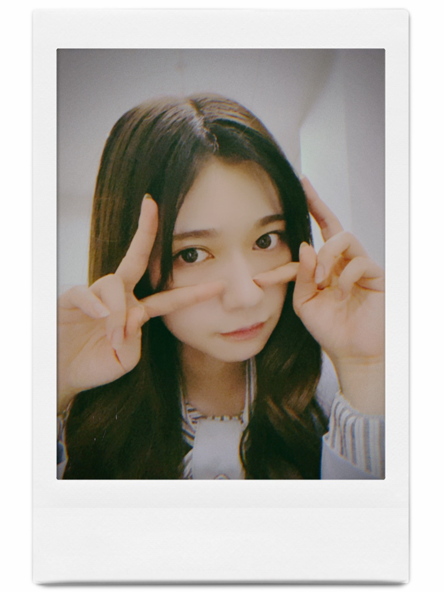
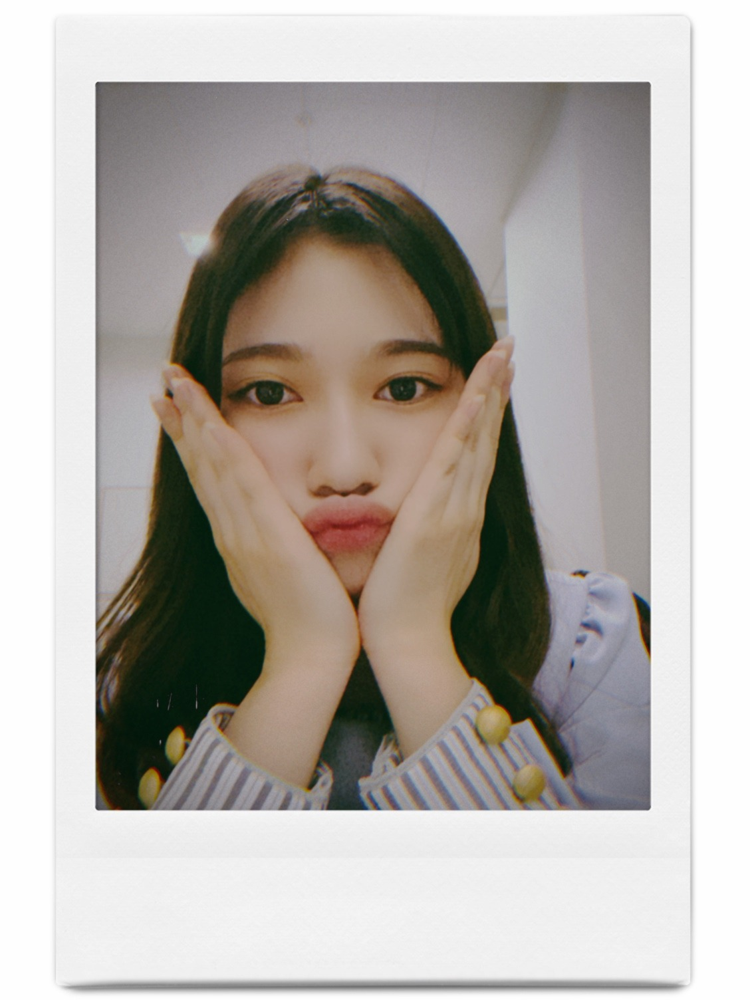
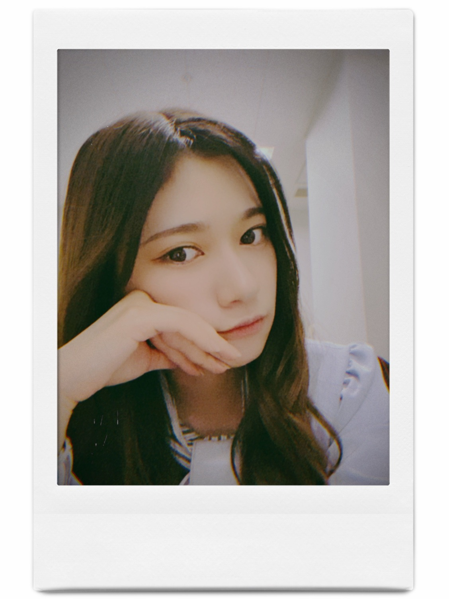

2020/1206Sunライブ頑張れー。☺️
ニュースがとまらんぜが11月で5年目となり
そのタイミングで林ちゃんにバトンタッチという形になりました。
私らしく精一杯活動していたら
お話を頂いた場所でした。
私の独特な視点だったり
当時はまだブログですら個人になりたて
自分を知ってもらえる場所は本当に限られていて
モバメやブログ
ライブでいかに見つけてもらえるか
少ないチャンスの中
更に小さなスポットライトの真ん中に入れるようにと
拙い言葉ではありますが
真っ直ぐ思っていること感じたことを
思うがままに発言してきました。
そしたら、見つけてもらえた場所の１つに
連載がありました。
アイドルとしてはとても異例なことです。
そもそも連載を5年も続けられる事も異例な事でした。
アイドルではあるけど
1人の人間です。
それをテーマに本当に
社会に踏み込んで
ぎりぎりな事を記事にしようとしたり
スタッフさんにも本当にお世話になりながら
無事終われました。
勿論、こんなに続いたのは
ファンの方初め
私の気持ちや考えに賛成してくれる方が
沢山いたからです。
ここでは意見することの大切さ
自分らしく生きていくのはとても大変な事だけど
その時間や行動は宝になるとより感じる事が出来ました。
自分らしく生きていれば必ず味方はいる。
それを肌で実感できる場所でした。
正直、1年で終わるものだと思っていたので
5年間続けられた事
無事に終われた事
想像よりも遥かに長く続けられた事
そして、始めた当初後輩は居なかったですし
グループの中でも下から
数番目くらいの幼い私でしたから
後輩に継げるなんて思いもしませんでした。
とにかく継げるというのは
自分がしっかりと歩めた証拠だと思います。
改めて、ありがとうございました。✨
っということで
4期生のライブがありますね。☺️✨
変なところ人見知りしちゃうけど
陰ながら応援してます。☺️✨
4期生の子からは乃木坂46を大切にしよう
紡いでくれるような雰囲気を感じます。
体調気をつけて頑張ってねー。
って、メンバーってメンバーの
ブログ見てるのかなとか考えつつ
私はメンバーのブログ見るの好きです。
色んなこと知れるから
細かく見るとその子が見える気がして好きです。✨
そんな私も毎日バタバタさせてもらってます。
ライブありますので
そちらもよろしくお願いします。
何年も踊ってるから体に
染み付いてて不思議な気持ちです。
今年は自粛もありファンの皆さんも
私達もですがお互い体力面も考えて
ライブ楽しみましょう。✨
健康と安全が第一なので無理せずいきましょう。✨

bye〜✨
コメント(570)
ニュースがとまらんぜ5年間ほんとにお疲れ様！！
蘭世の言葉が好きな俺は毎回素直な感情で言葉を綴っている
蘭世にいろんなことを考えさせられたよ
社会のいろんなことに対して思うことを発信できるのは誰にだってできるようなことではないから素直にすごいなって思ってたよ
後輩もたくさん増えたね！！
きっと蘭世に刺激を受けているメンバーもたくさんいるよね！！
蘭世推しとしては感無量です！！
蘭世が1番！！！
蘭世ライブ頑張ってね！！
蘭世ちゃんがいろいろ考えたこと、感じてたことをコラムで知れるのが楽しみでした
またいろいろな場面で発信をしてくれたら嬉しいな
MV集のトーク会にハズレてしまったのが悲しいので、インスタライブでもshowroomでも会える機会がほしーです
良い環境に身をおくことも重要ですし、そこに巡り会うのもその人の努力や人徳だと思います。
笑顔は大切だと思います。
笑顔は周りに伝染します。
周りも幸せにすると思います。
知ってもらえる場所・・・。
それはいっぱいありますし、ファンの皆様は気づいていますよ。
なので楽しく、乃木坂活動をしてくださいね。
自信を持っていて大丈夫です、乃木坂の中にいるとわかりずらいですが蘭世さんのことたくさんの人が応援しています。
ニュースがとまらんぜ、毎週楽しかったよ。
ありがとう。
アンダーライブ楽しんでね。
いい1年の締めくくりにしてね。
インスタグラムの投稿、毎回嬉しい。
もっとたくさんの人に見てもらえるように微力やけどがんばるよ。
いつもありがとう。
こう
ミーグリのやつ蘭世の沢山取ったので今からめちゃくちゃ楽しみです！ 蘭世がたまらんぜ！
寺田蘭世さんブログ更新ありがとう
ニュースがとまらんぜ5年連載おめでとう⁉︎(^^)
NEWSがとまらんぜの連載期間5年間、私が読み始めたのは1年くらい前からですが、春のステイホーム期間で過去の分を読み返してました。
当時のことを振り返ることができて、あの時から日本がいろんなことの歩みを少しずつでも進んでいるんだなと感じました。そして乃木坂46関連のニュースも
セルジオ越後さん並みの長期コラム！
蘭世さんはブログなどでも発信しているので、コラムとは別の形ですが続けて欲しいです！
明るい継承ということですね！
4期生ライブも今日あり、アンダーライブも控えていて、12月に沢山ライブがあるのは嬉しいです！メンバーがライブについての発信が多くてブログが充実してますね。
体調に気を付けてください、アンダーライブ楽しみです！
とまらんぜもテーマが違うブログの一つのような感じでいつも更新楽しみにしてました！
るなちゃんの連載も末永く続くといいですね！
それでは！
日に日に美しくなってますね
アラたん
僕が蘭世を好きになったきっかけのうちの一つもニュースが止まらんぜでした。
自分よりも若い人がすごく社会の情勢に対して真摯に向き合っていて心を打たれたのを覚えています。
4期生ライブ
そんな蘭世からバトンを受け取ったるなちゃんがひめたんのソロ曲「自分のこと」を歌ってましたね。
すごくすごく素敵に歌っていて1期生から2期生が繋いだものがどんどんつながっているのを感じました。
ライブ全体もとてもパワフルでフレッシュで力をもらえました。
次はアンダラですね！
間違いなく自分たちの力で積み上げてきたものだと思うのでその力を存分に発揮して素晴らしいライブにしてください！
自分も少しでも盛り上がれるように準備してます！
まだまだ蘭世の勢い止まらんぜ！
好きでソ。
インスタグラム190000おめでとう
後輩想いの蘭世が大好きです!
ミーグリ当選したのでお話するのが
とても楽しみです!
ニュースが止まらんぜの連載、本当にお疲れ様でした！
蘭世は物事を冷静に見て自分の意見を言える人だったからこそ続けてこれたのだと思います！
自分の拠り所の1つとしてこれだけ続けられたことは誇っていいと思います！
本当にお疲れ様でした！
今日4期生ライブですね〜
未来の乃木坂を担う皆で作り上げたライブ、頑張って欲しいです！
蘭世のアンダーライブ見たかったなあ
また行けないよ〜…
行けないけど応援してるね！
寒くなってきたので、体調管理により気をつけてください！
ずっと応援しています！
ちょっとした名言集
冬がなければ、春はそれほど快適ではないだろう。時には逆境がなければ、繁栄はそれほど歓迎されないだろう。
by アン・ブラッドストリート
これからは、ブログを使ってもっと発信をしたり、他にテレビのＭＣなんかにも手をだして欲しいと思うのです。
それができるのは、乃木坂の中でも蘭世だけだと思っています。これからの活躍も見続けていきます。
蘭世の嘘のない言葉がいつも自分を強くしてくれるんです。
長く続いてただけあって寂しさもあるけれど、林ちゃんのも
何かと楽しみです✨
アンダラも身体に気をつけて楽しみましょうー！！
今日も蘭世の勢いとまらんぜ！またね〜
ライブ楽しみだね。
不安な世の中だけど、毎日頑張れるのは蘭世のおかげだよ、いつもありがとう!
蘭世さんで終わらず後輩に引き継げたのは
蘭世さんの頑張りが評価されたから
というのは本当に嬉しいしその通りだと思います
るなちゃんのコラム見たよー！
やっぱり蘭世さんと似てるところあるね笑
4期生ライブで白米様してたよ笑！！
ちなみに蘭世さんポジはりかちゃんだったよ！
体調に気をつけてお仕事頑張ってください！！
このお仕事はきっと、今後、形は変わるかも知れませんが、
何かに繋がって行くと思います。
応援します。
ビーム写真、眼力に撃ちぬかれました！
4期生ライブの林ちゃんソロ曲、最高でした！
改めて5年間ニュースがとまらんぜ連載お疲れさまでしたm(_ _)m
毎回楽しみにしてたから寂しいけど蘭世の言葉や文面がすきだからこれからもブログとかInstagramとか楽しみにしてるね(^^)
今日は４期ライブだね！
その次はアンダラだ！
正直俺はそれが楽しみでしょうがない！
できれば現場でみたい‥
チケット当たりますように‥
自分も体調管理気を付けますんで蘭世も気を付けてねー！
またコメントします！！
まだまだ、乃木坂46にいて下さいね！
独特な表現が好きです♪
二期生の中でもピカイチでしょう。
何気に応援しております。
ニュースがとまらんぜお疲れ様！
5年間ホントによく頑張ってたね〜
林ちゃんにも頑張ってほしいね！
今後のブログも楽しみに待ってます！
体調には気をつけてね！
応援してます！
大好きです♡
4期生ライブ真っ最中だね！
僕も応援してますよ〜！！
乃木動画のアンダーライブもみてますがコンテンツがかなりあるので膨大な時間を要します(笑)
ニュースが止まらんぜの連載、本当にお疲れ様でした！
蘭世は物事を冷静に見て自分の意見を言える人だったからこそ続けてこれたのだと思います！
自分の拠り所の1つとしてこれだけ続けられたことは誇っていいと思います！
本当にお疲れ様でした！
今日4期生ライブですね〜
未来の乃木坂を担う皆で作り上げたライブ、頑張って欲しいです！
蘭世のアンダーライブ見たかったなあ
また行けないよ〜…
行けないけど応援してるね！
寒くなってきたので、体調管理により気をつけてください！
ずっと応援しています！
ちょっとした名言集
冬がなければ、春はそれほど快適ではないだろう。時には逆境がなければ、繁栄はそれほど歓迎されないだろう。
by アン・ブラッドストリート
連載もお疲れ様
寂しいけど、蘭世が繋いだバトン！！かっこいい先輩です
私事ですが進学先が決まりました
蘭世のおかげで色んなことが頑張れてます
本当にありがとう
無理せず楽しんでください！
アンダーライブ当選してるといいなあ
自撮りありがとう〜すき〜
林の初記事を見た？最初の写真はまさかの本人の土下座って、るなぴらしいなあ（笑）
そして改めて5年間記事続けて本当にお疲れさまでした
元々は毎日の土曜日（？）の更新だったが、最後らへんでらんぜもきっと忙しくなって更新が少なくなったことは気づいたよ
正直蘭世の記事が居なくなるって寂しいけど、今後はインスタで楽しめようよ＼(^o^)／
そして後輩の今後も期待しよう♪
これからも頑張って(/･ω･)/
蘭世も体調気をつけて
うわーー、この指が若干曲がってるビームは可愛い(｡>﹏<｡)♡
乃木中の2期生フィーチャー企画で、日刊スポーツの横山記者が「これだけ、長い期間、続いているコラムは珍しい」ということを、おっしゃっていたのが紹介されて、うれしかったのを覚えています。
るなちゃんにバトンタッチとなるけど、やっぱり、そこからさらに続いていってほしいですね。
やっぱり、何でもそうだけど、続けるってのが、すごく大事なことだよね。
好きだー
た４期生ライブを見終わって、コメント
書いてます。
らんぜちゃんならではの発言の場。聞け
ば、日刊スポーツではセルジオさんに次
ぐ長期間の連載だったとか。
しっかり道を作って、後輩にバトンを繋
ぎましたね。
こちらこそありがとうございました。
４期生ライブが終われば、アンダーライ
ブ。貫禄の３日間。
経験がなければ３Ｄａｙｓはこなせませ
んよね。
バトンタッチ出来たのは蘭世が頑張ったからできることだよね。
お疲れ様～！
４期生ライブ配信であるね。
そろそろ終わったくらいかな？
次はアンダラ！蘭世の番だね。
4期ライブ見てて遅れました ♂️
次はアンダラですね！
当たっても外れても
現地でもリモートでも
絶対に見るのでよろしくお願いいたします！
いつもありがとう
ユースケ
義将(よしのぶ)です。
連載を後輩に継がせられるのは蘭世さんが５年間しっかり連載してきた信頼と実績あってのことだと思います。
４期生ライブ配信観ましたよ。
凄く楽しめたましたが、やはり蘭世さんをライブで観たいなと改めて思ってしまいました。
アンダーライブ、絶対チケット当てて観に行きますね。
楽しみにしています。
それでは健康第一でお仕事頑張って下さい。
また。
5年間の連載、お疲れ様でした(^^)
蘭世ちゃんの活躍があったからコラムの継続、林ちゃんへのバトンタッチに繋がったのだと思うととても嬉しいです！
5年間の長期連載、お疲れ様です！
4期生ちゃんたちの配信ライブ、彼女たちの精一杯を観ることが出来てとっても楽しかったよ。素晴らしい子たちばかりだねー。先輩が素晴らしいからだね！笑
あと2週間で蘭世ちゃんのライブだね。声は届けられないけれど応援する気持ちが蘭世ちゃんに届きますように精一杯応援しているよ！
大好きです。またね:-)
蘭世､素敵だぜ～♪
1枚目の写真は
『蘭世たんビーム！』だぜ～？


今日は４期生さんライブで盛り上がっていますね。
若いメンバーの活躍、楽しみです。
堀さんのご卒業、今でもなかなか実感としては受け入れられない気持ちはあります。
でもまだまだ１・２期生のメンバーがたくさん残っているからこそ後輩たちがいろいろ学べる環境が乃木坂さんにはあると思いますしそれが乃木坂さんの強みだと思います。
これからも後輩たちのお手本としての蘭世さんの存在はとても大きなものだと思います。
年末に向けてますますお忙しくなると思いますがお身体には気をつけて頑張ってください。